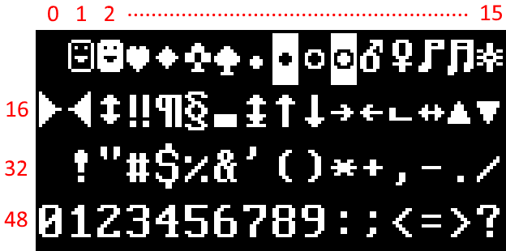

Font overview (SadConsole Systems)
A "font" in SadConsole is used to display characters on the screen. The font can be a mix of textual glyphs or graphical tiles. Fonts consist of two parts, the image file and the config file. The image is in any format that the current host supports. Most likely, this is MonoGame. Both the MonoGame and SFML hosts support loading .png images, and that image format can be considered safe.
Image file
The image file of the font must use a transparent background, and not a colored key file. The glyphs in the font graphic should use a pure white color (255, 255,255) for the foreground. The image file should have two very specific glyphs, a fully transparent glyph, and a fully filled in glyph.
Here is an example of the standard font graphic included in SadConsole.

Note
Normally the background of the font texture is transparent, not black. In this article it's black so that you can see the glyphs.
Glyph indices
The font is broken down into glyph cells that are referenced by index. Index 0 represents the top-left cell, and moving right, counts up from 0 where the next cell is 1. Once the index reaches the end of the line, it moves to the next line, continuing to count.

When text is written to a surface or console, all of the characters are placed on the surface at the appropraite positions. This is because the surfaces and consoles you see on the screen draw the font glyphs by index. All of the english characters represented in the font file are placed in their matching keyboard keycode index. Character A (code 65) is placed at index 65, while character z (code 122) is placed at index 122, and so on. If index 66 is placed at (0,0) on a surface, you'll see th B character at (0,0).
Font config file
Each graphical font has a special config file that tells SadConsole how to interpret the image file. This is a json encoded file that ends with the .font extension.
Here is an example of a font config file. According to this config, each glyph in the image file is 8 pixels wide by 16 pixels hight. There is a 1 pixel spacing between every glyph, and the solid-filled glyph index is 219.
{
"$type": "SadConsole.SadFont, SadConsole",
"Name": "IBM_8x16",
"FilePath": "IBM8x16.png",
"GlyphHeight": 16,
"GlyphPadding": 1,
"GlyphWidth": 8,
"SolidGlyphIndex": 219,
"Columns": 16,
"IsSadExtended": false
}
Font requirements
There are a few requirements for the font image and config files.
Index 0 in the image file should be completely transparent.
This is important because index 0 is considered a dead glyph and is used in optimization. Any glyph besides 0, even if it's completely transparent, is drawn to the screen. Glyph 0 is always skipped.
The config file must set the
SolidGlyphIndexindex. In a code page 437 font, which is what SadConsole is built around, this is index 219.The solid white glyph is used in filling the backgrounds of cells.
Font sizes
Fonts that are used by surfaces require a "size" to determine how big each glyph should be. In general, the font has a built-in size that corresponds to the size of the individual glyphs in the image file. The size used with a surface can be in any amount of pixels, and the font is stretched to that size.
When you need to generate a font size, use the IFont.GetFontSize(IFont.Sizes) method, passing in a size value. The size values are designed to generate pixel-aligned font sizes. Use the font object you want to generate a font size from. After you create a surface, you could change the font. To ensure that you use the appropriate font size, use the surface's current font to generate a size. For example, the following code creates the surface object first, which uses the default font, then uses the assigned font to generate a font size two times bigger.
SadConsole.ScreenSurface surfaceObj = new(80, 24);
surfaceObj.FontSize = surfaceObj.Font.GetFontSize(IFont.Sizes.Two);
Default font
SadConsole uses the IBM 8x16 Code Page 437 font by default. The default font, designated by the DefaultFont property, is automatically used by every SadConsole surface object, unless a different font is designated when the object is created.
You can have SadConsole use a custom font on startup by adjusting the game config that starts SadConsole. For more information, see Use your own font as the default font.
using SadConsole.Configuration;
Game.Configuration gameStartup = new Game.Configuration()
// ...config options...
.ConfigureFonts(SetupFont)
;
Game.Create(gameStartup);
Game.Instance.Run();
Game.Instance.Dispose();
static void SetupFont(Game.ConfigurationFontLoader loader)
{
loader.UseCustomFont("fonts\\new.font");
}
Changing the default font after SadConsole has started
If you want SadConsole to use a different font after SadConsole has started, set the SadConsole.Game.Instance.DefaultFont property to a different font instance. Any object created after the default font changes, uses the new default font.
Load a font
Fonts are loaded by the game host with the LoadFont(string) method. When a font is loaded, it's registered with the Fonts dictionary, which is keyed by the font name, and then the instance is returned.
Fonts can be preloaded with the game config, before your game starts. For more information, see Use a delegate to configure the font options.